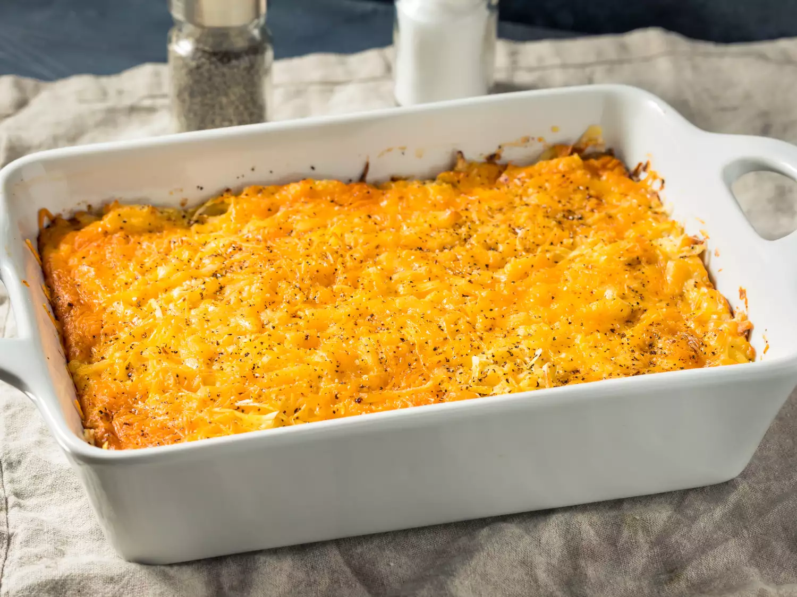

Home
Casserole

Description
The homey recipe captures all of the elements of a quintessential Midwestern hot dish: meat, vegetables, soup,
and a starch (in this case, mashed potatoes).
Ingredients
- 8 large potatoes (peeled and chopped)
- 500 g of ground beef
- 1/2 cup onion (chopped)
- 1 can of green beans (drained)
- 1 can of carrots (drained)
- 1 can of cream of mushroom soup
- 1 can of condensed tomato soup
- 3/4 cup of shredded Cheddar cheese
Steps
- Preheat the oven to 175 degrees C. Lightly grease a 9x13-inch baking dish.
- Bring a large saucepan of salted water to a boil. Add potatoes and cook until tender but still firm, about
15 minutes. Drain and mash.
- While potatoes are cooking, combine ground beef and onion in a large skillet over medium-high heat. Cook and
stir until beef is evenly browned and crumbly and onion is tender, 7 to 10 minutes. Drain.
- Stir carrots, green beans, and condensed soups into beef mixture. Transfer to the prepared baking dish.
Spread mashed potatoes over beef mixture and sprinkle Cheddar cheese over top.
- Bake in the preheated oven until potatoes are light golden brown on top, about 30 minutes.